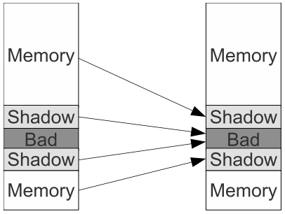
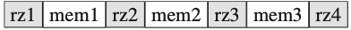

<!DOCTYPE html>
<html lang="zh-CN">
<head>
  <meta charset="UTF-8">
<meta name="viewport" content="width=device-width">
<meta name="theme-color" content="#222" media="(prefers-color-scheme: light)">
<meta name="theme-color" content="#222" media="(prefers-color-scheme: dark)">
<meta name="generator" content="Hexo 5.4.0">

<link rel="preconnect" href="https://fonts.googleapis.com" crossorigin>
<link rel="preconnect" href="https://cdn.jsdelivr.net" crossorigin>
  <link rel="apple-touch-icon" sizes="180x180" href="/images/apple-touch-icon-next.png">
  <link rel="icon" type="image/png" sizes="32x32" href="/images/favicon-32x32-next.png">
  <link rel="icon" type="image/png" sizes="16x16" href="/images/favicon-16x16-next.png">
  <link rel="mask-icon" href="/images/logo.svg" color="#222">
  <meta name="google-site-verification" content="piAnQ_mnwkhV_qh4_Se1yLzM1IwOvuq-vmYfXBkWRXU">

<link rel="stylesheet" href="/css/main.css">

<link rel="stylesheet" href="https://fonts.googleapis.com/css?family=EB+Garamond:300,300italic,400,400italic,700,700italic%7CNoto+Serif+SC:300,300italic,400,400italic,700,700italic%7CRoboto+Mono:300,300italic,400,400italic,700,700italic&display=swap&subset=latin,latin-ext">

<link rel="stylesheet" href="https://cdn.jsdelivr.net/npm/@fortawesome/fontawesome-free@5.15.4/css/all.min.css" integrity="sha256-mUZM63G8m73Mcidfrv5E+Y61y7a12O5mW4ezU3bxqW4=" crossorigin="anonymous">
  <link rel="stylesheet" href="https://cdn.jsdelivr.net/npm/animate.css@3.1.1/animate.min.css" integrity="sha256-PR7ttpcvz8qrF57fur/yAx1qXMFJeJFiA6pSzWi0OIE=" crossorigin="anonymous">
  <link rel="stylesheet" href="https://cdn.jsdelivr.net/npm/@fancyapps/fancybox@3.5.7/dist/jquery.fancybox.min.css" integrity="sha256-Vzbj7sDDS/woiFS3uNKo8eIuni59rjyNGtXfstRzStA=" crossorigin="anonymous">

<script class="next-config" data-name="main" type="application/json">{"hostname":"www.packetmania.net","root":"/","images":"/images","scheme":"Gemini","darkmode":true,"version":"8.8.1","exturl":false,"sidebar":{"position":"left","display":"post","padding":18,"offset":12},"copycode":true,"bookmark":{"enable":true,"color":"#222","save":"auto"},"mediumzoom":false,"lazyload":false,"pangu":false,"comments":{"style":"tabs","active":"gitalk | utterances | disqus","storage":true,"lazyload":false,"nav":{"disqus":{"text":"Disqus评论","order":-1},"utterances":{"text":"Utterances评论","order":-2},"gitalk":{"text":"Gitalk评论","order":-3}}},"stickytabs":false,"motion":{"enable":true,"async":false,"transition":{"post_block":"fadeIn","post_header":"fadeInDown","post_body":"fadeInDown","coll_header":"fadeInLeft","sidebar":"fadeInUp"}},"prism":false,"i18n":{"placeholder":"搜索...","empty":"没有找到任何搜索结果：${query}","hits_time":"找到 ${hits} 个搜索结果（用时 ${time} 毫秒）","hits":"找到 ${hits} 个搜索结果"},"path":"/search.json","localsearch":{"enable":true,"trigger":"auto","top_n_per_article":1,"unescape":false,"preload":false}}</script><script src="/js/config.js"></script>
<meta name="description" content="内存访问错误是最常见的软件错误，常常造成程序崩溃。程序员们一直在找寻优秀的内存访问错误检测工具，以便及时定位和排除错误以提高软件的可靠性。2012年由谷歌工程师开发的一款AddressSanitizer工具，以其覆盖面广、高效率和低开销的特性，已成为C&#x2F;C++程序员们的首选。这里对其原理和使用方法做一个简要的介绍。">
<meta property="og:type" content="article">
<meta property="og:title" content="AddressSanitizer — 程序员检测内存访问错误的利器">
<meta property="og:url" content="https://www.packetmania.net/2021/08/03/ASAN-intro/index.html">
<meta property="og:site_name" content="网络热度">
<meta property="og:description" content="内存访问错误是最常见的软件错误，常常造成程序崩溃。程序员们一直在找寻优秀的内存访问错误检测工具，以便及时定位和排除错误以提高软件的可靠性。2012年由谷歌工程师开发的一款AddressSanitizer工具，以其覆盖面广、高效率和低开销的特性，已成为C&#x2F;C++程序员们的首选。这里对其原理和使用方法做一个简要的介绍。">
<meta property="og:locale" content="zh_CN">
<meta property="og:image" content="https://www.packetmania.net/2021/08/03/ASAN-intro/asan-mm.png">
<meta property="og:image" content="https://www.packetmania.net/2021/08/03/ASAN-intro/asan-redzone.png">
<meta property="article:published_time" content="2021-08-03T23:00:56.000Z">
<meta property="article:modified_time" content="2022-04-24T01:28:32.013Z">
<meta property="article:author" content="子曦">
<meta property="article:tag" content="C&#x2F;C++编程">
<meta property="article:tag" content="系统编程">
<meta name="twitter:card" content="summary">
<meta name="twitter:image" content="https://www.packetmania.net/2021/08/03/ASAN-intro/asan-mm.png">


<link rel="canonical" href="https://www.packetmania.net/2021/08/03/ASAN-intro/">


<script class="next-config" data-name="page" type="application/json">{"sidebar":"","isHome":false,"isPost":true,"lang":"zh-CN","comments":true,"permalink":"https://www.packetmania.net/2021/08/03/ASAN-intro/","path":"2021/08/03/ASAN-intro/","title":"AddressSanitizer — 程序员检测内存访问错误的利器"}</script>

<script class="next-config" data-name="calendar" type="application/json">""</script>
<title>AddressSanitizer — 程序员检测内存访问错误的利器 | 网络热度</title>
  
    <script async src="https://www.googletagmanager.com/gtag/js?id=G-9YKBP0QK7Z"></script>
  <script class="next-config" data-name="google_analytics" type="application/json">{"tracking_id":"G-9YKBP0QK7Z","only_pageview":false}</script>
  <script src="/js/third-party/analytics/google-analytics.js"></script>


  <noscript>
    <link rel="stylesheet" href="/css/noscript.css">
  </noscript>
<link rel="alternate" href="/atom.xml" title="网络热度" type="application/atom+xml">
</head>

<body itemscope itemtype="http://schema.org/WebPage" class="use-motion">
  <div class="headband"></div>

  <main class="main">
    <header class="header" itemscope itemtype="http://schema.org/WPHeader">
      <div class="header-inner"><div class="site-brand-container">
  <div class="site-nav-toggle">
    <div class="toggle" aria-label="切换导航栏" role="button">
        <span class="toggle-line"></span>
        <span class="toggle-line"></span>
        <span class="toggle-line"></span>
    </div>
  </div>

  <div class="site-meta">

    <a href="/" class="brand" rel="start">
      <i class="logo-line"></i>
      <h1 class="site-title">网络热度</h1>
      <i class="logo-line"></i>
    </a>
      <p class="site-subtitle" itemprop="description">技术 新知 共享</p>
  </div>

  <div class="site-nav-right">
    <div class="toggle popup-trigger">
        <i class="fa fa-search fa-fw fa-lg"></i>
    </div>
  </div>
</div>


<nav class="site-nav">
  <ul class="main-menu menu">
        <li class="menu-item menu-item-home"><a href="/" rel="section"><i class="fa fa-home fa-fw"></i>首页</a></li>
        <li class="menu-item menu-item-about"><a href="/about/" rel="section"><i class="fa fa-user fa-fw"></i>关于</a></li>
        <li class="menu-item menu-item-tags"><a href="/tags/" rel="section"><i class="fa fa-tags fa-fw"></i>标签</a></li>
        <li class="menu-item menu-item-categories"><a href="/categories/" rel="section"><i class="fa fa-th fa-fw"></i>分类</a></li>
        <li class="menu-item menu-item-archives"><a href="/archives/" rel="section"><i class="fa fa-archive fa-fw"></i>归档</a></li>
        <li class="menu-item menu-item-sitemap"><a href="/sitemap.xml" rel="section"><i class="fa fa-sitemap fa-fw"></i>站点地图</a></li>
        <li class="menu-item menu-item-rss"><a href="/atom.xml" rel="section"><i class="fa fa-rss fa-fw"></i>RSS</a></li>
        <li class="menu-item menu-item-language"><a href="https://www.packetmania.net/en" rel="section"><i class="fa fa-language fa-fw"></i>English</a></li>
      <li class="menu-item menu-item-search">
        <a role="button" class="popup-trigger"><i class="fa fa-search fa-fw"></i>搜索
        </a>
      </li>
  </ul>
</nav>


  <div class="search-pop-overlay">
    <div class="popup search-popup"><div class="search-header">
  <span class="search-icon">
    <i class="fa fa-search"></i>
  </span>
  <div class="search-input-container">
    <input autocomplete="off" autocapitalize="off" maxlength="80"
           placeholder="搜索..." spellcheck="false"
           type="search" class="search-input">
  </div>
  <span class="popup-btn-close" role="button">
    <i class="fa fa-times-circle"></i>
  </span>
</div>
<div class="search-result-container no-result">
  <div class="search-result-icon">
    <i class="fa fa-spinner fa-pulse fa-5x"></i>
  </div>
</div>

    </div>
  </div>

</div>
        
  
  <div class="toggle sidebar-toggle" role="button">
    <span class="toggle-line"></span>
    <span class="toggle-line"></span>
    <span class="toggle-line"></span>
  </div>

  <aside class="sidebar">

    <div class="sidebar-inner sidebar-nav-active sidebar-toc-active">
      <ul class="sidebar-nav">
        <li class="sidebar-nav-toc">
          文章目录
        </li>
        <li class="sidebar-nav-overview">
          站点概览
        </li>
      </ul>

      <div class="sidebar-panel-container">
        <!--noindex-->
        <div class="post-toc-wrap sidebar-panel">
            <div class="post-toc animated"><ol class="nav"><li class="nav-item nav-level-3"><a class="nav-link" href="#%E5%B7%A5%E5%85%B7%E6%A6%82%E8%BF%B0"><span class="nav-number">1.</span> <span class="nav-text">工具概述</span></a></li><li class="nav-item nav-level-3"><a class="nav-link" href="#%E5%B7%A5%E4%BD%9C%E5%8E%9F%E7%90%86"><span class="nav-number">2.</span> <span class="nav-text">工作原理</span></a><ol class="nav-child"><li class="nav-item nav-level-4"><a class="nav-link" href="#%E5%BD%B1%E5%AD%90%E5%86%85%E5%AD%98"><span class="nav-number">2.1.</span> <span class="nav-text">影子内存</span></a></li><li class="nav-item nav-level-4"><a class="nav-link" href="#%E7%BC%96%E8%AF%91%E5%99%A8%E6%8F%92%E6%A1%A9"><span class="nav-number">2.2.</span> <span class="nav-text">编译器插桩</span></a></li><li class="nav-item nav-level-4"><a class="nav-link" href="#%E8%BF%90%E8%A1%8C%E5%BA%93%E6%9B%BF%E6%8D%A2"><span class="nav-number">2.3.</span> <span class="nav-text">运行库替换</span></a></li></ol></li><li class="nav-item nav-level-3"><a class="nav-link" href="#%E5%BA%94%E7%94%A8%E7%A4%BA%E4%BE%8B"><span class="nav-number">3.</span> <span class="nav-text">应用示例</span></a><ol class="nav-child"><li class="nav-item nav-level-4"><a class="nav-link" href="#%E6%B5%8B%E8%AF%95%E7%94%A8%E4%BE%8B"><span class="nav-number">3.1.</span> <span class="nav-text">测试用例</span></a></li><li class="nav-item nav-level-4"><a class="nav-link" href="#oob%E6%B5%8B%E8%AF%95"><span class="nav-number">3.2.</span> <span class="nav-text">OOB测试</span></a></li><li class="nav-item nav-level-4"><a class="nav-link" href="#uaf%E6%B5%8B%E8%AF%95"><span class="nav-number">3.3.</span> <span class="nav-text">UAF测试</span></a></li><li class="nav-item nav-level-4"><a class="nav-link" href="#hml%E6%B5%8B%E8%AF%95"><span class="nav-number">3.4.</span> <span class="nav-text">HML测试</span></a></li><li class="nav-item nav-level-4"><a class="nav-link" href="#uas%E6%B5%8B%E8%AF%95"><span class="nav-number">3.5.</span> <span class="nav-text">UAS测试</span></a></li><li class="nav-item nav-level-4"><a class="nav-link" href="#uar%E6%B5%8B%E8%AF%95"><span class="nav-number">3.6.</span> <span class="nav-text">UAR测试</span></a></li></ol></li></ol></div>
        </div>
        <!--/noindex-->

        <div class="site-overview-wrap sidebar-panel">
          <div class="site-author site-overview-item animated" itemprop="author" itemscope itemtype="http://schema.org/Person">
    
  <p class="site-author-name" itemprop="name">子曦</p>
  <div class="site-description" itemprop="description">计算机网络技术及软件设计与实现</div>
</div>
<div class="site-state-wrap site-overview-item animated">
  <nav class="site-state">
      <div class="site-state-item site-state-posts">
        <a href="/archives/">
          <span class="site-state-item-count">24</span>
          <span class="site-state-item-name">日志</span>
        </a>
      </div>
      <div class="site-state-item site-state-categories">
          <a href="/categories/">
        <span class="site-state-item-count">7</span>
        <span class="site-state-item-name">分类</span></a>
      </div>
      <div class="site-state-item site-state-tags">
          <a href="/tags/">
        <span class="site-state-item-count">17</span>
        <span class="site-state-item-name">标签</span></a>
      </div>
  </nav>
</div>
  <div class="links-of-author site-overview-item animated">
      <span class="links-of-author-item">
        <a href="https://github.com/packetmania" title="GitHub → https:&#x2F;&#x2F;github.com&#x2F;packetmania" rel="noopener" target="_blank"><i class="fab fa-github fa-fw"></i>GitHub</a>
      </span>
      <span class="links-of-author-item">
        <a href="mailto:zixiruoxue@gmail.com" title="E-Mail → mailto:zixiruoxue@gmail.com" rel="noopener" target="_blank"><i class="fa fa-envelope fa-fw"></i>E-Mail</a>
      </span>
      <span class="links-of-author-item">
        <a href="https://twitter.com/zixisean" title="Twitter → https:&#x2F;&#x2F;twitter.com&#x2F;zixisean" rel="noopener" target="_blank"><i class="fab fa-twitter fa-fw"></i>Twitter</a>
      </span>
      <span class="links-of-author-item">
        <a href="https://stackoverflow.com/users/15140531" title="StackOverflow → https:&#x2F;&#x2F;stackoverflow.com&#x2F;users&#x2F;15140531" rel="noopener" target="_blank"><i class="fab fa-stack-overflow fa-fw"></i>StackOverflow</a>
      </span>
  </div>
  <div class="cc-license site-overview-item animated" itemprop="license">
    <a href="https://creativecommons.org/licenses/by-nc-nd/4.0/deed.zh" class="cc-opacity" rel="noopener" target="_blank"></a>
  </div>


  <div class="links-of-blogroll site-overview-item animated">
    <div class="links-of-blogroll-title"><i class="fa fa-globe fa-fw"></i>
      Links
    </div>
    <ul class="links-of-blogroll-list">
        <li class="links-of-blogroll-item">
          <a href="https://blog.packetmania.net/" title="https:&#x2F;&#x2F;blog.packetmania.net" rel="noopener" target="_blank">中国站（香港）</a>
        </li>
        <li class="links-of-blogroll-item">
          <a href="https://www.packetmania.net/" title="https:&#x2F;&#x2F;www.packetmania.net">国际站（美国）</a>
        </li>
    </ul>
  </div>

        </div>
      </div>
        <div class="back-to-top animated" role="button" aria-label="返回顶部">
          <i class="fa fa-arrow-up"></i>
          <span>0%</span>
        </div>
    </div>
  </aside>
  <div class="sidebar-dimmer"></div>


    </header>

    
  <div class="reading-progress-bar"></div>
  <a role="button" class="book-mark-link book-mark-link-fixed"></a>

<noscript>
  <div class="noscript-warning">Theme NexT works best with JavaScript enabled</div>
</noscript>


    <div class="main-inner post posts-expand">


  


<div class="post-block">
  
  

  <article itemscope itemtype="http://schema.org/Article" class="post-content" lang="zh-CN">
    <link itemprop="mainEntityOfPage" href="https://www.packetmania.net/2021/08/03/ASAN-intro/">

    <span hidden itemprop="author" itemscope itemtype="http://schema.org/Person">
      <meta itemprop="image" content="/images/ccie.gif">
      <meta itemprop="name" content="子曦">
      <meta itemprop="description" content="计算机网络技术及软件设计与实现">
    </span>

    <span hidden itemprop="publisher" itemscope itemtype="http://schema.org/Organization">
      <meta itemprop="name" content="网络热度">
    </span>
      <header class="post-header">
        <h1 class="post-title" itemprop="name headline">
          AddressSanitizer — 程序员检测内存访问错误的利器
        </h1>

        <div class="post-meta-container">
          <div class="post-meta">
    <span class="post-meta-item">
      <span class="post-meta-item-icon">
        <i class="far fa-calendar"></i>
      </span>
      <span class="post-meta-item-text">发表于</span>

      <time title="创建时间：2021-08-03 16:00:56" itemprop="dateCreated datePublished" datetime="2021-08-03T16:00:56-07:00">2021-08-03</time>
    </span>
      <span class="post-meta-item">
        <span class="post-meta-item-icon">
          <i class="far fa-calendar-check"></i>
        </span>
        <span class="post-meta-item-text">更新于</span>
        <time title="修改时间：2022-04-23 18:28:32" itemprop="dateModified" datetime="2022-04-23T18:28:32-07:00">2022-04-23</time>
      </span>
    <span class="post-meta-item">
      <span class="post-meta-item-icon">
        <i class="far fa-folder"></i>
      </span>
      <span class="post-meta-item-text">分类于</span>
        <span itemprop="about" itemscope itemtype="http://schema.org/Thing">
          <a href="/categories/%E5%B7%A5%E5%85%B7%E4%BD%BF%E7%94%A8/" itemprop="url" rel="index"><span itemprop="name">工具使用</span></a>
        </span>
    </span>

  
    <span class="post-meta-item" title="阅读次数" id="busuanzi_container_page_pv">
      <span class="post-meta-item-icon">
        <i class="far fa-eye"></i>
      </span>
      <span class="post-meta-item-text">阅读次数：</span>
      <span id="busuanzi_value_page_pv"></span>
    </span>
    <span class="post-meta-break"></span>
    <span class="post-meta-item" title="本文字数">
      <span class="post-meta-item-icon">
        <i class="far fa-file-word"></i>
      </span>
      <span class="post-meta-item-text">本文字数：</span>
      <span>20k</span>
    </span>
    <span class="post-meta-item" title="阅读时长">
      <span class="post-meta-item-icon">
        <i class="far fa-clock"></i>
      </span>
      <span class="post-meta-item-text">阅读时长 &asymp;</span>
      <span>18 分钟</span>
    </span>
</div>

        </div>
      </header>

    
    
    
    <div class="post-body" itemprop="articleBody">
        <p>内存访问错误是最常见的软件错误，常常造成程序崩溃。程序员们一直在找寻优秀的内存访问错误检测工具，以便及时定位和排除错误以提高软件的可靠性。2012年由谷歌工程师开发的一款AddressSanitizer工具，以其覆盖面广、高效率和低开销的特性，已成为C/C++程序员们的首选。这里对其原理和使用方法做一个简要的介绍。<span id="more"></span></p>
<div class="note success no-icon"><p><strong>One man's "magic" is another man's engineering. "Supernatural" is a null word.</strong><br> <strong>— <em>Robert Anson Heinlein</em>（罗伯特·安森·海因莱因，美国硬科幻小说作家，人称“科幻先生”）</strong></p>
</div>
<h3 id="工具概述">工具概述</h3>
<p>C/C++语言允许程序员对存储器进行低端控制，这种直接内存管理使编写高效应用软件成为可能。然而，由此也让内存访问错误，包括缓冲区溢出、访问释放后的内存和内存泄漏等，成为程序设计和实现中必须面对的严重问题。虽然有一些工具软件提供了检测这类错误的能力，但是它们的运行效率和功能覆盖常常不太理想。</p>
<p>2012年，谷歌工程师Konstantin Serebryany和团队成员一起发布了名为AddressSanitizer<a href="#fn1" class="footnote-ref" id="fnref1" role="doc-noteref"><sup>1</sup></a>的开源C/C++程序内存访问错误检测器。AddressSanitizer（简称ASan）应用新的内存分配、映射和代码插桩技术，能高效地检测几乎所有的内存访问错误。使用SPEC 2006基准分析软件包测量，ASan运行过程中的减速比均值不超过2、内存消耗约为2.4倍。相比之下，另一个知名的检测工具<a target="_blank" rel="noopener" href="http://valgrind.org/">Valgrind</a>的减速比均值约为20，几乎无法投入实用。</p>
<p>下表总结了ASan能检测的C/C++程序内存访问错误类型：</p>
<table>
<thead>
<tr class="header">
<th style="text-align: center;">错误类型</th>
<th style="text-align: center;">英文</th>
<th style="text-align: center;">简称</th>
<th style="text-align: center;">说明</th>
</tr>
</thead>
<tbody>
<tr class="odd">
<td style="text-align: center;">堆内存释放后使用</td>
<td style="text-align: center;">heap use after free</td>
<td style="text-align: center;">UAF</td>
<td style="text-align: center;">内存释放后继续访问（悬空指针）</td>
</tr>
<tr class="even">
<td style="text-align: center;">堆内存缓冲区溢出</td>
<td style="text-align: center;">heap buffer overflow</td>
<td style="text-align: center;">Heap OOB</td>
<td style="text-align: center;">动态分配内存越界读写</td>
</tr>
<tr class="odd">
<td style="text-align: center;">堆内存泄漏</td>
<td style="text-align: center;">heap memory leak</td>
<td style="text-align: center;">HML</td>
<td style="text-align: center;">内存使用完毕未被释放</td>
</tr>
<tr class="even">
<td style="text-align: center;">全局缓冲区溢出</td>
<td style="text-align: center;">global buffer overflow</td>
<td style="text-align: center;">Global OOB</td>
<td style="text-align: center;">全局对象越界读写</td>
</tr>
<tr class="odd">
<td style="text-align: center;">堆栈作用域后使用</td>
<td style="text-align: center;">stack use after scope</td>
<td style="text-align: center;">UAS</td>
<td style="text-align: center;">局部对象在作用域外访问</td>
</tr>
<tr class="even">
<td style="text-align: center;">堆栈返回后使用</td>
<td style="text-align: center;">stack use after return</td>
<td style="text-align: center;">UAR</td>
<td style="text-align: center;">局部对象在返回后访问</td>
</tr>
<tr class="odd">
<td style="text-align: center;">堆栈缓冲区溢出</td>
<td style="text-align: center;">stack buffer overflow</td>
<td style="text-align: center;">Stack OOB</td>
<td style="text-align: center;">局部对象越界读写</td>
</tr>
</tbody>
</table>
<div class="note info"><p>其实ASan本身并不包括检测堆内存泄漏功能，只是当集成ASan到编译器时，基于其对内存分配函数的修改，编译工具原来的泄漏检测功能与ASan互相融合到一起了。所以，编译时加入ASan选项也默认打开了泄漏检测功能。</p>
</div>
<p>这涵盖了除“读未初始化内存”（uninitialized memory reads，简称UMR）之外所有的常见内存访问错误。ASan检测这些错误的误报率（false positive）为0，这是相当出众的成绩。此外，ASan还能检测一些C++特有的内存访问错误：</p>
<ul>
<li><em>初始化次序错误</em>（<a target="_blank" rel="noopener" href="https://isocpp.org/wiki/faq/ctors#static-init-order">Initialization Order Fiasco</a>）：当两个静态对象定义在不同的源文件，且一个对象的构造函数调用另一个对象的方法时，如果前者的编译单元先初始化，就会产生程序崩溃。</li>
<li><em>容器访问溢出</em>（Container Overflow）：给定libc++/libstdc++容器container，访问[container.end(), container.begin() + container.capacity())]，即超出[container.begin(), container.end()]区域但仍在动态分配的内存区内。</li>
<li><em>删除不匹配</em>（Delete Mismatch）：使用<code>new foo[n]</code>创建的数组对象，不应该调用<code>delete foo</code>删除，必须调用<code>delete [] foo</code>。</li>
</ul>
<p>ASan的高可靠性和高性能，使它一经问世就得到编译器和集成开发环境开发者的首肯。现今ASan已经集成到全部四大编译工具集中：</p>
<table>
<thead>
<tr class="header">
<th style="text-align: center;">编译器/IDE</th>
<th style="text-align: center;">起始支持版本</th>
<th style="text-align: center;">操作系统</th>
<th style="text-align: center;">适用平台</th>
</tr>
</thead>
<tbody>
<tr class="odd">
<td style="text-align: center;">Clang/LLVM<a href="#fn2" class="footnote-ref" id="fnref2" role="doc-noteref"><sup>2</sup></a></td>
<td style="text-align: center;">3.1</td>
<td style="text-align: center;">Unix-like</td>
<td style="text-align: center;">跨平台</td>
</tr>
<tr class="even">
<td style="text-align: center;">GCC</td>
<td style="text-align: center;">4.8</td>
<td style="text-align: center;">Unix-like</td>
<td style="text-align: center;">跨平台</td>
</tr>
<tr class="odd">
<td style="text-align: center;">Xcode</td>
<td style="text-align: center;">7.0</td>
<td style="text-align: center;">Mac OS X</td>
<td style="text-align: center;">苹果公司产品</td>
</tr>
<tr class="even">
<td style="text-align: center;">MSVC</td>
<td style="text-align: center;">16.9</td>
<td style="text-align: center;">Windows</td>
<td style="text-align: center;">IA-32、x86-64和ARM</td>
</tr>
</tbody>
</table>
<p>ASan的研发者最早使用Chromium开源浏览器做常规测试，在10个月的时间里发现了300多个内存访问错误。在集成到主流编译工具之后，它报告了众多流行的开源软件中隐藏已久的错误，如Mozilla Firefox、Perl、Vim、PHP和MySQL等。有趣的是，ASan还找出了LLVM和GCC编译器本身代码中一些内存访问错误。现在，许多软件公司已经将运行ASan加入到必备的质量控制流程中。</p>
<h3 id="工作原理">工作原理</h3>
<p>2012年Serebryany发表的USENIX会议论文<a href="#fn3" class="footnote-ref" id="fnref3" role="doc-noteref"><sup>3</sup></a>，全面阐述了ASan的设计原理、算法思想和编程实现。在整体结构上，ASan由两部分构成：</p>
<ol type="1">
<li>编译器插桩（compiler instrumentation）模块 — 修改代码用以核对每次内存访问时的影子内存（shadow memory）状态，并在全局和堆栈对象边缘创建毒化的红区（poisoned redzones）以检测向上或向下溢出的情况。</li>
<li>运行时库（run-time library）替换模块 — 替换内存分配/释放（<code>malloc/free</code>）及其相关函数，用以在动态分配的堆内存区域边缘创建毒化的红区、延迟释放后内存区域的重用并生成出错报告。</li>
</ol>
<p>这里影子内存、编译器插桩和内存分配函数替换都是之前已经存在的技术，那么ASan是如何创新地应用它们以实现高效的错误检测的呢？让我们来看看细节。</p>
<h4 id="影子内存">影子内存</h4>
<p>许多检测工具使用分离的影子内存记录程序内存的元数据，然后应用插桩在内存访问时检查影子内存，以确认读写是否安全。不同的是，ASan使用了更有效的<strong>直接映射影子内存</strong>。</p>
<p>ASan的设计者们注意到，典型情况下<code>malloc</code>函数返回的内存地址至少是8字节对齐的。比如申请20个字节的内存，会划分24字节内存，实际返回指针的最后3比特全为0。此外，任何一个对齐的8字节序列只会有9种不同状态：前 <span class="math inline">\(k\,(0\leq k \leq 8)\)</span> 字节可访问，后 <span class="math inline">\(8-k\)</span> 不可。由此他们想到了一个更紧凑的影子内存映射和使用方案：</p>
<ul>
<li>预留八分之一的虚拟地址空间给影子内存</li>
<li>使用除以8再加上偏移量的公式直接映射应用程序内存到影子内存
<ul>
<li>32位应用程序：<code>Shadow = (Mem &gt;&gt; 3) + 0x20000000;</code></li>
<li>64位应用程序：<code>Shadow = (Mem &gt;&gt; 3) + 0x7fff8000;</code></li>
</ul></li>
<li>影子内存的每个字节记录对应8字节内存块的9种状态之一
<ul>
<li>全部8字节可访问，值为0</li>
<li>全部8字节不可访问（已毒化），值为负</li>
<li>仅首 <span class="math inline">\(k\,(1\leq k \leq 7)\)</span> 字节可访问，值为 <span class="math inline">\(k\)</span></li>
</ul></li>
</ul>
<p>下图显示了ASan的地址空间布局和映射关系。留意中间的Bad区，这是影子内存自身映射后的地址段。因为影子内存对应用程序是不可见的，ASan使用页保护机制将之设定为不可访问。</p>
<p></p>
<h4 id="编译器插桩">编译器插桩</h4>
<p>确定了影子内存的设计，检测动态内存访问错误的编译器插桩实现就很容易了。对于8字节的内存访问，在原读写代码前插入指令检查影子内存字节，如不为0则报错。对于不足8字节的内存访问，插桩较复杂一点，这时要比较影子内存的字节数值与读写地址的最后三个比特。这种情况也被称为“慢通道”（slow path），示例代码如下：</p>
<figure class="highlight c"><table><tr><td class="gutter"><pre><span class="line">1</span><br><span class="line">2</span><br><span class="line">3</span><br><span class="line">4</span><br><span class="line">5</span><br><span class="line">6</span><br><span class="line">7</span><br><span class="line">8</span><br><span class="line">9</span><br><span class="line">10</span><br><span class="line">11</span><br><span class="line">12</span><br><span class="line">13</span><br><span class="line">14</span><br><span class="line">15</span><br><span class="line">16</span><br></pre></td><td class="code"><pre><span class="line"><span class="comment">// Check the cases where we access first k bytes of the qword</span></span><br><span class="line"><span class="comment">// and these k bytes are unpoisoned.</span></span><br><span class="line"><span class="function"><span class="keyword">bool</span> <span class="title">SlowPathCheck</span><span class="params">(shadow_value, address, kAccessSize)</span> </span>&#123;</span><br><span class="line">  last_accessed_byte = (address &amp; <span class="number">7</span>) + kAccessSize - <span class="number">1</span>;</span><br><span class="line">  <span class="keyword">return</span> (last_accessed_byte &gt;= shadow_value);</span><br><span class="line">&#125;</span><br><span class="line">...</span><br><span class="line"></span><br><span class="line">byte *shadow_address = MemToShadow(address);</span><br><span class="line">byte shadow_value = *shadow_address;</span><br><span class="line"><span class="keyword">if</span> (shadow_value) &#123;</span><br><span class="line">  <span class="keyword">if</span> (SlowPathCheck(shadow_value, address, kAccessSize)) &#123;</span><br><span class="line">    ReportError(address, kAccessSize, kIsWrite);</span><br><span class="line">  &#125;</span><br><span class="line">&#125;</span><br><span class="line">*address = ...;  <span class="comment">// or: ... = *address;</span></span><br></pre></td></tr></table></figure>
<p>对于全局和堆栈（局部）对象，ASan设计了不同的插桩检测它们的越界访问错误。全局对象周边的红区由编译器在编译时加入，其地址在应用程序启动时被传递到运行时库，运行库函数再毒化红区并记下地址以便生成错误报告。堆栈对象是在函数调用时创建的，相应地其红区的建立和毒化也在运行时完成。另外，因为堆栈对象在函数返回时被删除，插桩代码还必须将其映射到的影子内存清零。</p>
<p>在实际实现中，ASan编译器插桩的过程被置于编译器优化流水线的末端，这样插桩就只适用于变量和循环优化之后剩余的内存访问指令。在最新的GCC发行版中，ASan编译器插桩代码位于gcc子目录下的两个文件中<code>gcc/asan.[ch]</code>。</p>
<h4 id="运行库替换">运行库替换</h4>
<p>运行库需要加入管理影子内存的代码。在应用程序启动时，要初始化影子内存自身映射到的地址段，以禁止程序的其他部分访问影子内存。运行库替换了旧的内存分配和释放函数，还加入了一些错误报告函数如<code>__asan_report_load8</code>等。</p>
<p>替换后新的内存分配函数<code>malloc</code>将在请求的内存块前后分配额外的存储区作为红区，并设置红区为不可寻址。这就是所谓的毒化过程。实际中，因为内存分配器要维护对应不同对象大小的可用内存列表，如果某个对象列表为空时，操作系统会一次性分配一大组内存块及其红区。由此前后内存块的红区会相连，如下图所示，<span class="math inline">\(n\)</span> 个内存块只需要分配 <span class="math inline">\(n+1\)</span> 个红区：</p>
<p></p>
<p>新的<code>free</code>函数在内存释放后需要毒化整个存储区并将其置于一个隔离（quarantine）队列。这样可以避免存储区被立即分配。否则，如果存储区马上就被重用，就无法检测出对上次释放后内存的错误访问。隔离队列的大小决定了存储区处于隔离状态的时间，越大则检测UAF错误的能力越强！</p>
<p>默认情况下，为了在错误报告中提供更详尽的信息，<code>malloc</code>和<code>free</code>函数都会记录其调用栈。<code>malloc</code>的调用栈保存在所分配内存左边的红区中，故而大的红区可以保留更多的调用栈帧结构。<code>free</code>的调用栈则保存在所分配内存区的起始处。</p>
<p>集成到GCC编译器中，ASan运行库替换的源代码位于libsanitizer子目录下<code>libsanitizer/asan/*</code>，编译后产生的运行库名为<code>libasan.so</code>。</p>
<h3 id="应用示例">应用示例</h3>
<p>ASan的使用非常方便，下面以运行于x86_64虚拟机上的Ubuntu Linux 20.4 + GCC 9.3.0系统为例，演示检测各种内存访问错误的能力。</p>
<h4 id="测试用例">测试用例</h4>
<p>如下所示，测试程序编写了7个函数，各自引入不同的错误类型。函数名与错误类型一一对照：</p>
<figure class="highlight c"><table><tr><td class="gutter"><pre><span class="line">1</span><br><span class="line">2</span><br><span class="line">3</span><br><span class="line">4</span><br><span class="line">5</span><br><span class="line">6</span><br><span class="line">7</span><br><span class="line">8</span><br><span class="line">9</span><br><span class="line">10</span><br><span class="line">11</span><br><span class="line">12</span><br><span class="line">13</span><br><span class="line">14</span><br><span class="line">15</span><br><span class="line">16</span><br><span class="line">17</span><br><span class="line">18</span><br><span class="line">19</span><br><span class="line">20</span><br><span class="line">21</span><br><span class="line">22</span><br><span class="line">23</span><br><span class="line">24</span><br><span class="line">25</span><br><span class="line">26</span><br><span class="line">27</span><br><span class="line">28</span><br><span class="line">29</span><br><span class="line">30</span><br><span class="line">31</span><br><span class="line">32</span><br><span class="line">33</span><br><span class="line">34</span><br><span class="line">35</span><br><span class="line">36</span><br><span class="line">37</span><br><span class="line">38</span><br><span class="line">39</span><br><span class="line">40</span><br><span class="line">41</span><br><span class="line">42</span><br><span class="line">43</span><br><span class="line">44</span><br><span class="line">45</span><br><span class="line">46</span><br><span class="line">47</span><br><span class="line">48</span><br><span class="line">49</span><br><span class="line">50</span><br><span class="line">51</span><br><span class="line">52</span><br><span class="line">53</span><br><span class="line">54</span><br><span class="line">55</span><br><span class="line">56</span><br><span class="line">57</span><br><span class="line">58</span><br><span class="line">59</span><br></pre></td><td class="code"><pre><span class="line"><span class="comment">/*</span></span><br><span class="line"><span class="comment"> * PakcteMania https://packetmania.github.io</span></span><br><span class="line"><span class="comment"> *</span></span><br><span class="line"><span class="comment"> * gcc asan-test.c -o asan-test -fsanitize=address -g</span></span><br><span class="line"><span class="comment"> */</span></span><br><span class="line"></span><br><span class="line"><span class="meta">#<span class="meta-keyword">include</span> <span class="meta-string">&lt;stdio.h&gt;</span></span></span><br><span class="line"><span class="meta">#<span class="meta-keyword">include</span> <span class="meta-string">&lt;stdlib.h&gt;</span></span></span><br><span class="line"><span class="meta">#<span class="meta-keyword">include</span> <span class="meta-string">&lt;unistd.h&gt;</span></span></span><br><span class="line"><span class="meta">#<span class="meta-keyword">include</span> <span class="meta-string">&lt;strings.h&gt;</span></span></span><br><span class="line"><span class="comment">/* #include &lt;sanitizer/lsan_interface.h&gt; */</span></span><br><span class="line"></span><br><span class="line"><span class="keyword">int</span> ga[<span class="number">10</span>] = &#123;<span class="number">1</span>&#125;;</span><br><span class="line"></span><br><span class="line"><span class="function"><span class="keyword">int</span> <span class="title">global_buffer_overflow</span><span class="params">()</span> </span>&#123;</span><br><span class="line">    <span class="keyword">return</span> ga[<span class="number">10</span>];</span><br><span class="line">&#125;</span><br><span class="line"></span><br><span class="line"><span class="function"><span class="keyword">void</span> <span class="title">heap_leak</span><span class="params">()</span> </span>&#123;</span><br><span class="line">    <span class="keyword">int</span>* k = (<span class="keyword">int</span> *)<span class="built_in">malloc</span>(<span class="number">10</span>*<span class="keyword">sizeof</span>(<span class="keyword">int</span>));</span><br><span class="line">    <span class="keyword">return</span>;</span><br><span class="line">&#125;</span><br><span class="line"></span><br><span class="line"><span class="function"><span class="keyword">int</span> <span class="title">heap_use_after_free</span><span class="params">()</span> </span>&#123;</span><br><span class="line">    <span class="keyword">int</span>* u = (<span class="keyword">int</span> *)<span class="built_in">malloc</span>(<span class="number">10</span>*<span class="keyword">sizeof</span>(<span class="keyword">int</span>));</span><br><span class="line">    u[<span class="number">9</span>] = <span class="number">10</span>;</span><br><span class="line">    <span class="built_in">free</span>(u);</span><br><span class="line">    <span class="keyword">return</span> u[<span class="number">9</span>];</span><br><span class="line">&#125;</span><br><span class="line"></span><br><span class="line"><span class="function"><span class="keyword">int</span> <span class="title">heap_buffer_overflow</span><span class="params">()</span> </span>&#123;</span><br><span class="line">    <span class="keyword">int</span>* h = (<span class="keyword">int</span> *)<span class="built_in">malloc</span>(<span class="number">10</span>*<span class="keyword">sizeof</span>(<span class="keyword">int</span>));</span><br><span class="line">    h[<span class="number">0</span>] = <span class="number">10</span>;</span><br><span class="line">    <span class="keyword">return</span> h[<span class="number">10</span>];</span><br><span class="line">&#125;</span><br><span class="line"></span><br><span class="line"><span class="function"><span class="keyword">int</span> <span class="title">stack_buffer_overflow</span><span class="params">()</span> </span>&#123;</span><br><span class="line">    <span class="keyword">int</span> s[<span class="number">10</span>];</span><br><span class="line">    s[<span class="number">0</span>] = <span class="number">10</span>;</span><br><span class="line">    <span class="keyword">return</span> s[<span class="number">10</span>];</span><br><span class="line">&#125;</span><br><span class="line"></span><br><span class="line"><span class="keyword">int</span> *gp;</span><br><span class="line"></span><br><span class="line"><span class="function"><span class="keyword">void</span> <span class="title">stack_use_after_return</span><span class="params">()</span> </span>&#123;</span><br><span class="line">    <span class="keyword">int</span> r[<span class="number">10</span>];</span><br><span class="line">    r[<span class="number">0</span>] = <span class="number">10</span>;</span><br><span class="line">    gp = &amp;r[<span class="number">0</span>];</span><br><span class="line">    <span class="keyword">return</span>;</span><br><span class="line">&#125;</span><br><span class="line"></span><br><span class="line"><span class="function"><span class="keyword">void</span> <span class="title">stack_use_after_scope</span><span class="params">()</span> </span>&#123;</span><br><span class="line">    &#123;</span><br><span class="line">        <span class="keyword">int</span> c = <span class="number">0</span>;</span><br><span class="line">        gp = &amp;c;</span><br><span class="line">    &#125;</span><br><span class="line">    *gp = <span class="number">10</span>;</span><br><span class="line">    <span class="keyword">return</span>;</span><br><span class="line">&#125;</span><br></pre></td></tr></table></figure>
<p>测试程序调用<code>getopt</code>库函数支持单字母命令行选项，可让用户选择要测试的错误类型。命令行选项使用信息如下：</p>
<figure class="highlight bash"><table><tr><td class="gutter"><pre><span class="line">1</span><br><span class="line">2</span><br><span class="line">3</span><br><span class="line">4</span><br><span class="line">5</span><br><span class="line">6</span><br><span class="line">7</span><br><span class="line">8</span><br><span class="line">9</span><br><span class="line">10</span><br><span class="line">11</span><br><span class="line">12</span><br></pre></td><td class="code"><pre><span class="line">$ ./asan-test</span><br><span class="line"></span><br><span class="line">Test AddressSanitizer</span><br><span class="line">usage: asan-test [ -bfloprs ]</span><br><span class="line"></span><br><span class="line">-b	heap buffer overflow</span><br><span class="line">-f	heap use after free</span><br><span class="line">-l	heap memory leak</span><br><span class="line">-o	global buffer overflow</span><br><span class="line">-p	stack use after scope</span><br><span class="line">-r	stack use after <span class="built_in">return</span></span><br><span class="line">-s	stack buffer overflow</span><br></pre></td></tr></table></figure>
<p>测试程序的GCC编译命令很简单，只要加上两个编译选项就够了</p>
<ul>
<li><code>-fsanitize=address</code>：激活ASan工具</li>
<li><code>-g</code>：启动调试功能，保留调试信息</li>
</ul>
<h4 id="oob测试">OOB测试</h4>
<p>对于Heap OOB错误，运行结果是</p>
<figure class="highlight bash"><table><tr><td class="gutter"><pre><span class="line">1</span><br><span class="line">2</span><br><span class="line">3</span><br><span class="line">4</span><br><span class="line">5</span><br><span class="line">6</span><br><span class="line">7</span><br><span class="line">8</span><br><span class="line">9</span><br><span class="line">10</span><br><span class="line">11</span><br><span class="line">12</span><br><span class="line">13</span><br><span class="line">14</span><br><span class="line">15</span><br><span class="line">16</span><br><span class="line">17</span><br><span class="line">18</span><br><span class="line">19</span><br><span class="line">20</span><br><span class="line">21</span><br><span class="line">22</span><br><span class="line">23</span><br><span class="line">24</span><br><span class="line">25</span><br><span class="line">26</span><br><span class="line">27</span><br><span class="line">28</span><br><span class="line">29</span><br><span class="line">30</span><br><span class="line">31</span><br><span class="line">32</span><br><span class="line">33</span><br><span class="line">34</span><br><span class="line">35</span><br><span class="line">36</span><br></pre></td><td class="code"><pre><span class="line">$ ./asan-test -b</span><br><span class="line">=================================================================</span><br><span class="line">==57360==ERROR: AddressSanitizer: heap-buffer-overflow on address 0x604000000038 at pc 0x55bf46fd64ed bp 0x7ffced908dc0 sp 0x7ffced908db0</span><br><span class="line">READ of size 4 at 0x604000000038 thread T0</span><br><span class="line">    <span class="comment">#0 0x55bf46fd64ec in heap_buffer_overflow /home/zixi/coding/asan-test.c:34</span></span><br><span class="line">    <span class="comment">#1 0x55bf46fd6a3f in main /home/zixi/coding/asan-test.c:88</span></span><br><span class="line">    <span class="comment">#2 0x7fd16f6560b2 in __libc_start_main (/lib/x86_64-linux-gnu/libc.so.6+0x270b2)</span></span><br><span class="line">    <span class="comment">#3 0x55bf46fd628d in _start (/home/zixi/coding/asan-test+0x128d)</span></span><br><span class="line"></span><br><span class="line">0x604000000038 is located 0 bytes to the right of 40-byte region [0x604000000010,0x604000000038)</span><br><span class="line">allocated by thread T0 here:</span><br><span class="line">    <span class="comment">#0 0x7fd16f92ebc8 in malloc (/lib/x86_64-linux-gnu/libasan.so.5+0x10dbc8)</span></span><br><span class="line">    <span class="comment">#1 0x55bf46fd646c in heap_buffer_overflow /home/zixi/coding/asan-test.c:32</span></span><br><span class="line">    <span class="comment">#2 0x55bf46fd6a3f in main /home/zixi/coding/asan-test.c:88</span></span><br><span class="line">    <span class="comment">#3 0x7fd16f6560b2 in __libc_start_main (/lib/x86_64-linux-gnu/libc.so.6+0x270b2)</span></span><br><span class="line"></span><br><span class="line">SUMMARY: AddressSanitizer: heap-buffer-overflow /home/zixi/coding/asan-test.c:34 <span class="keyword">in</span> heap_buffer_overflow</span><br><span class="line">Shadow bytes around the buggy address:</span><br><span class="line">  0x0c087fff7fb0: 00 00 00 00 00 00 00 00 00 00 00 00 00 00 00 00</span><br><span class="line">  0x0c087fff7fc0: 00 00 00 00 00 00 00 00 00 00 00 00 00 00 00 00</span><br><span class="line">  0x0c087fff7fd0: 00 00 00 00 00 00 00 00 00 00 00 00 00 00 00 00</span><br><span class="line">  0x0c087fff7fe0: 00 00 00 00 00 00 00 00 00 00 00 00 00 00 00 00</span><br><span class="line">  0x0c087fff7ff0: 00 00 00 00 00 00 00 00 00 00 00 00 00 00 00 00</span><br><span class="line">=&gt;0x0c087fff8000: fa fa 00 00 00 00 00[fa]fa fa fa fa fa fa fa fa</span><br><span class="line">  0x0c087fff8010: fa fa fa fa fa fa fa fa fa fa fa fa fa fa fa fa</span><br><span class="line">  0x0c087fff8020: fa fa fa fa fa fa fa fa fa fa fa fa fa fa fa fa</span><br><span class="line">  0x0c087fff8030: fa fa fa fa fa fa fa fa fa fa fa fa fa fa fa fa</span><br><span class="line">  0x0c087fff8040: fa fa fa fa fa fa fa fa fa fa fa fa fa fa fa fa</span><br><span class="line">  0x0c087fff8050: fa fa fa fa fa fa fa fa fa fa fa fa fa fa fa fa</span><br><span class="line">Shadow byte legend (one shadow byte represents 8 application bytes):</span><br><span class="line">  Addressable:           00</span><br><span class="line">  Partially addressable: 01 02 03 04 05 06 07 </span><br><span class="line">  Heap left redzone:       fa</span><br><span class="line">  Freed heap region:       fd</span><br><span class="line">  ...</span><br><span class="line">==57360==ABORTING</span><br></pre></td></tr></table></figure>
<p>参考<code>heap-buffer-overflow</code>函数实现，可以看到它申请了40个字节的内存，以容纳10个32位整型数。然而在函数返回时，代码越界读取所分配内存之后的数据。如上运行记录显示，程序检测到了Heap OOB错误并立即中止，ASan报告了出错的代码文件名和行号<code>asan-test.c:34</code>，也准确地列出了动态内存的原始分配函数调用栈。报告的总结（SUMMARY）部分，还打印出了相关地址对应的影子内存数据（观察<code>=&gt;</code>标注的行）。要读的地址是0x604000000038，其映射后的影子内存地址0x0c087fff8007保存的是负值0xfa（已毒化，不可访问）。正因如此，ASan报错并中止程序运行。</p>
<p>Stack OOB测试用例如下所示。ASan报告了局部对象越界读错误。由于局部变量位于堆栈空间中，所以列出了函数<code>stack_buffr_overflow</code>的起始行号<code>asan-test.c:37</code>。与Heap OOB报告不同的是，局部变量的前后红区的影子内存毒化值是不一样的，之前<code>Stack left redzone</code>为0xf1，之后<code>Stack right redzone</code>为0xf3。使用不同的毒化值（都是0x80之后的负值），有利于快速区分不同的错误类型。</p>
<figure class="highlight bash"><table><tr><td class="gutter"><pre><span class="line">1</span><br><span class="line">2</span><br><span class="line">3</span><br><span class="line">4</span><br><span class="line">5</span><br><span class="line">6</span><br><span class="line">7</span><br><span class="line">8</span><br><span class="line">9</span><br><span class="line">10</span><br><span class="line">11</span><br><span class="line">12</span><br><span class="line">13</span><br><span class="line">14</span><br><span class="line">15</span><br><span class="line">16</span><br><span class="line">17</span><br><span class="line">18</span><br><span class="line">19</span><br><span class="line">20</span><br><span class="line">21</span><br><span class="line">22</span><br><span class="line">23</span><br><span class="line">24</span><br><span class="line">25</span><br><span class="line">26</span><br><span class="line">27</span><br><span class="line">28</span><br><span class="line">29</span><br><span class="line">30</span><br><span class="line">31</span><br><span class="line">32</span><br><span class="line">33</span><br><span class="line">34</span><br><span class="line">35</span><br><span class="line">36</span><br><span class="line">37</span><br><span class="line">38</span><br><span class="line">39</span><br></pre></td><td class="code"><pre><span class="line">$ ./asan-test -s</span><br><span class="line">=================================================================</span><br><span class="line">==57370==ERROR: AddressSanitizer: stack-buffer-overflow on address 0x7f1cf5044058 at pc 0x55d8b7e9d601 bp 0x7ffc830c29e0 sp 0x7ffc830c29d0</span><br><span class="line">READ of size 4 at 0x7f1cf5044058 thread T0</span><br><span class="line">    <span class="comment">#0 0x55d8b7e9d600 in stack_buffer_overflow /home/zixi/coding/asan-test.c:40</span></span><br><span class="line">    <span class="comment">#1 0x55d8b7e9daec in main /home/zixi/coding/asan-test.c:108</span></span><br><span class="line">    <span class="comment">#2 0x7f1cf87760b2 in __libc_start_main (/lib/x86_64-linux-gnu/libc.so.6+0x270b2)</span></span><br><span class="line">    <span class="comment">#3 0x55d8b7e9d28d in _start (/home/zixi/coding/asan-test+0x128d)</span></span><br><span class="line"></span><br><span class="line">Address 0x7f1cf5044058 is located <span class="keyword">in</span> stack of thread T0 at offset 88 <span class="keyword">in</span> frame</span><br><span class="line">    <span class="comment">#0 0x55d8b7e9d505 in stack_buffer_overflow /home/zixi/coding/asan-test.c:37</span></span><br><span class="line"></span><br><span class="line">  This frame has 1 object(s):</span><br><span class="line">    [48, 88) <span class="string">&#x27;s&#x27;</span> (line 38) &lt;== Memory access at offset 88 overflows this variable</span><br><span class="line">HINT: this may be a <span class="literal">false</span> positive <span class="keyword">if</span> your program uses some custom stack unwind mechanism, swapcontext or vfork</span><br><span class="line">      (longjmp and C++ exceptions *are* supported)</span><br><span class="line">SUMMARY: AddressSanitizer: stack-buffer-overflow /home/zixi/coding/asan-test.c:40 <span class="keyword">in</span> stack_buffer_overflow</span><br><span class="line">Shadow bytes around the buggy address:</span><br><span class="line">  0x0fe41ea007b0: 00 00 00 00 00 00 00 00 00 00 00 00 00 00 00 00</span><br><span class="line">  0x0fe41ea007c0: 00 00 00 00 00 00 00 00 00 00 00 00 00 00 00 00</span><br><span class="line">  0x0fe41ea007d0: 00 00 00 00 00 00 00 00 00 00 00 00 00 00 00 00</span><br><span class="line">  0x0fe41ea007e0: 00 00 00 00 00 00 00 00 00 00 00 00 00 00 00 00</span><br><span class="line">  0x0fe41ea007f0: 00 00 00 00 00 00 00 00 00 00 00 00 00 00 00 00</span><br><span class="line">=&gt;0x0fe41ea00800: f1 f1 f1 f1 f1 f1 00 00 00 00 00[f3]f3 f3 f3 f3</span><br><span class="line">  0x0fe41ea00810: 00 00 00 00 00 00 00 00 00 00 00 00 00 00 00 00</span><br><span class="line">  0x0fe41ea00820: 00 00 00 00 00 00 00 00 00 00 00 00 00 00 00 00</span><br><span class="line">  0x0fe41ea00830: 00 00 00 00 00 00 00 00 00 00 00 00 00 00 00 00</span><br><span class="line">  0x0fe41ea00840: 00 00 00 00 00 00 00 00 00 00 00 00 00 00 00 00</span><br><span class="line">  0x0fe41ea00850: 00 00 00 00 00 00 00 00 00 00 00 00 00 00 00 00</span><br><span class="line">Shadow byte legend (one shadow byte represents 8 application bytes):</span><br><span class="line">  Addressable:           00</span><br><span class="line">  Partially addressable: 01 02 03 04 05 06 07 </span><br><span class="line">  Heap left redzone:       fa</span><br><span class="line">  Freed heap region:       fd</span><br><span class="line">  Stack left redzone:      f1</span><br><span class="line">  Stack mid redzone:       f2</span><br><span class="line">  Stack right redzone:     f3</span><br><span class="line">  ...</span><br><span class="line">==57370==ABORTING</span><br></pre></td></tr></table></figure>
<p>以下Global OOB测试结果，也清晰地显示了出错行<code>asan-test.c:16</code>、全局变量名<code>ga</code>和其定义代码位置<code>asan-test.c:13:5</code>，还可以看到全局对象的红区毒化值为0xf9。</p>
<figure class="highlight bash"><table><tr><td class="gutter"><pre><span class="line">1</span><br><span class="line">2</span><br><span class="line">3</span><br><span class="line">4</span><br><span class="line">5</span><br><span class="line">6</span><br><span class="line">7</span><br><span class="line">8</span><br><span class="line">9</span><br><span class="line">10</span><br><span class="line">11</span><br><span class="line">12</span><br><span class="line">13</span><br><span class="line">14</span><br><span class="line">15</span><br><span class="line">16</span><br><span class="line">17</span><br><span class="line">18</span><br><span class="line">19</span><br><span class="line">20</span><br><span class="line">21</span><br><span class="line">22</span><br><span class="line">23</span><br><span class="line">24</span><br><span class="line">25</span><br><span class="line">26</span><br><span class="line">27</span><br><span class="line">28</span><br><span class="line">29</span><br><span class="line">30</span><br><span class="line">31</span><br><span class="line">32</span><br><span class="line">33</span><br><span class="line">34</span><br><span class="line">35</span><br><span class="line">36</span><br></pre></td><td class="code"><pre><span class="line">$ ./asan-test -o</span><br><span class="line">=================================================================</span><br><span class="line">==57367==ERROR: AddressSanitizer: global-buffer-overflow on address 0x564363ea4048 at pc 0x564363ea1383 bp 0x7ffc0d6085d0 sp 0x7ffc0d6085c0</span><br><span class="line">READ of size 4 at 0x564363ea4048 thread T0</span><br><span class="line">    <span class="comment">#0 0x564363ea1382 in global_buffer_overflow /home/zixi/coding/asan-test.c:16</span></span><br><span class="line">    <span class="comment">#1 0x564363ea1a6c in main /home/zixi/coding/asan-test.c:98</span></span><br><span class="line">    <span class="comment">#2 0x7f8cb43890b2 in __libc_start_main (/lib/x86_64-linux-gnu/libc.so.6+0x270b2)</span></span><br><span class="line">    <span class="comment">#3 0x564363ea128d in _start (/home/zixi/coding/asan-test+0x128d)</span></span><br><span class="line"></span><br><span class="line">0x564363ea4048 is located 0 bytes to the right of global variable <span class="string">&#x27;ga&#x27;</span> defined <span class="keyword">in</span> <span class="string">&#x27;asan-test.c:13:5&#x27;</span> (0x564363ea4020) of size 40</span><br><span class="line">SUMMARY: AddressSanitizer: global-buffer-overflow /home/zixi/coding/asan-test.c:16 <span class="keyword">in</span> global_buffer_overflow</span><br><span class="line">Shadow bytes around the buggy address:</span><br><span class="line">  0x0ac8ec7cc7b0: 00 00 00 00 00 00 00 00 00 00 00 00 00 00 00 00</span><br><span class="line">  0x0ac8ec7cc7c0: 00 00 00 00 00 00 00 00 00 00 00 00 00 00 00 00</span><br><span class="line">  0x0ac8ec7cc7d0: 00 00 00 00 00 00 00 00 00 00 00 00 00 00 00 00</span><br><span class="line">  0x0ac8ec7cc7e0: 00 00 00 00 00 00 00 00 00 00 00 00 00 00 00 00</span><br><span class="line">  0x0ac8ec7cc7f0: 00 00 00 00 00 00 00 00 00 00 00 00 00 00 00 00</span><br><span class="line">=&gt;0x0ac8ec7cc800: 00 00 00 00 00 00 00 00 00[f9]f9 f9 f9 f9 f9 f9</span><br><span class="line">  0x0ac8ec7cc810: 00 00 00 00 f9 f9 f9 f9 f9 f9 f9 f9 f9 f9 f9 f9</span><br><span class="line">  0x0ac8ec7cc820: f9 f9 f9 f9 f9 f9 f9 f9 f9 f9 f9 f9 f9 f9 f9 f9</span><br><span class="line">  0x0ac8ec7cc830: f9 f9 f9 f9 f9 f9 f9 f9 f9 f9 f9 f9 00 00 00 00</span><br><span class="line">  0x0ac8ec7cc840: 00 00 00 00 00 00 00 00 00 00 00 00 00 00 00 00</span><br><span class="line">  0x0ac8ec7cc850: 00 00 00 00 00 00 00 00 00 00 00 00 00 00 00 00</span><br><span class="line">Shadow byte legend (one shadow byte represents 8 application bytes):</span><br><span class="line">  Addressable:           00</span><br><span class="line">  Partially addressable: 01 02 03 04 05 06 07 </span><br><span class="line">  Heap left redzone:       fa</span><br><span class="line">  Freed heap region:       fd</span><br><span class="line">  Stack left redzone:      f1</span><br><span class="line">  Stack mid redzone:       f2</span><br><span class="line">  Stack right redzone:     f3</span><br><span class="line">  Stack after <span class="built_in">return</span>:      f5</span><br><span class="line">  Stack use after scope:   f8</span><br><span class="line">  Global redzone:          f9</span><br><span class="line">  ...</span><br><span class="line">==57367==ABORTING</span><br></pre></td></tr></table></figure>
<p>注意在这个例子中，全局数组<code>int ga[10] = &#123;1&#125;;</code>是被初始化过的，如果是未初始化的会怎么样？将代码稍作改动</p>
<figure class="highlight c"><table><tr><td class="gutter"><pre><span class="line">1</span><br><span class="line">2</span><br><span class="line">3</span><br><span class="line">4</span><br><span class="line">5</span><br><span class="line">6</span><br></pre></td><td class="code"><pre><span class="line"><span class="keyword">int</span> ga[<span class="number">10</span>];</span><br><span class="line"></span><br><span class="line"><span class="function"><span class="keyword">int</span> <span class="title">global_buffer_overflow</span><span class="params">()</span> </span>&#123;</span><br><span class="line">    ga[<span class="number">0</span>] = <span class="number">10</span>;</span><br><span class="line">    <span class="keyword">return</span> ga[<span class="number">10</span>];</span><br><span class="line">&#125;</span><br></pre></td></tr></table></figure>
<p>令人意外的是，ASan没有报告出这里明显的Global OOB错误。为什么？</p>
<p>原因与GCC对全局变量的处理方式有关。编译器将函数和已初始化的变量视为强符号（Strong symbols），而<strong>未初始化的变量默认是弱符号</strong>（Weak symbols）。因为弱符号在不同的源文件中的定义可能相异，所以其需要空间的大小未知。<u>编译器无法为弱符号在BSS段分配空间，就采用COMMON块的机制，让所有弱符号共享一个COMMON存储区，由此ASan无法插入红区</u>。在链接过程中，链接器读取所有输入目标文件以后，就可以确定弱符号的大小，在最终输出文件的BSS段为其分配空间。</p>
<p>幸运的是，GCC的<code>-fno-common</code>选项可以关闭COMMON块机制，使编译器直接将所有未初始化的全局变量加入目标文件的BSS段，也能让ASan正常工作。这一选项也禁止链接器合并弱符号，所以当链接器发现目标文件有重复定义的全局变量编译单元时直接报错。</p>
<p>实测证实了这一点，对上一段代码修改GCC命令行为</p>
<figure class="highlight bash"><table><tr><td class="gutter"><pre><span class="line">1</span><br></pre></td><td class="code"><pre><span class="line">gcc asan-test.c -o asan-test -fsanitize=address -fno-common -g</span><br></pre></td></tr></table></figure>
<p>编译链接后运行ASan，成功地报告了Global OOB错误。</p>
<h4 id="uaf测试">UAF测试</h4>
<p>下面是UAF错误检测的运行记录。这里不仅报告了出错的代码信息，还给出了动态内存的原始分配函数和释放函数的调用栈。记录表明内存由<code>asan-test.c:25</code>分配，在<code>asan-test.c:27</code>处被释放，却又在<code>asan-test.c:28</code>被读出。后面打印的影子内存数据表明所填充的数据是负值0xfd，这也是内存释放后毒化的结果。</p>
<figure class="highlight bash"><table><tr><td class="gutter"><pre><span class="line">1</span><br><span class="line">2</span><br><span class="line">3</span><br><span class="line">4</span><br><span class="line">5</span><br><span class="line">6</span><br><span class="line">7</span><br><span class="line">8</span><br><span class="line">9</span><br><span class="line">10</span><br><span class="line">11</span><br><span class="line">12</span><br><span class="line">13</span><br><span class="line">14</span><br><span class="line">15</span><br><span class="line">16</span><br><span class="line">17</span><br><span class="line">18</span><br><span class="line">19</span><br><span class="line">20</span><br><span class="line">21</span><br><span class="line">22</span><br><span class="line">23</span><br><span class="line">24</span><br><span class="line">25</span><br><span class="line">26</span><br><span class="line">27</span><br><span class="line">28</span><br><span class="line">29</span><br><span class="line">30</span><br><span class="line">31</span><br><span class="line">32</span><br><span class="line">33</span><br><span class="line">34</span><br><span class="line">35</span><br><span class="line">36</span><br><span class="line">37</span><br><span class="line">38</span><br><span class="line">39</span><br><span class="line">40</span><br><span class="line">41</span><br><span class="line">42</span><br></pre></td><td class="code"><pre><span class="line">$ ./asan-test -f</span><br><span class="line">=================================================================</span><br><span class="line">==57363==ERROR: AddressSanitizer: heap-use-after-free on address 0x604000000034 at pc 0x558b4a45444e bp 0x7ffccf4ca790 sp 0x7ffccf4ca780</span><br><span class="line">READ of size 4 at 0x604000000034 thread T0</span><br><span class="line">    <span class="comment">#0 0x558b4a45444d in heap_use_after_free /home/zixi/coding/asan-test.c:28</span></span><br><span class="line">    <span class="comment">#1 0x558b4a454a4e in main /home/zixi/coding/asan-test.c:91</span></span><br><span class="line">    <span class="comment">#2 0x7fc7cc98b0b2 in __libc_start_main (/lib/x86_64-linux-gnu/libc.so.6+0x270b2)</span></span><br><span class="line">    <span class="comment">#3 0x558b4a45428d in _start (/home/zixi/coding/asan-test+0x128d)</span></span><br><span class="line"></span><br><span class="line">0x604000000034 is located 36 bytes inside of 40-byte region [0x604000000010,0x604000000038)</span><br><span class="line">freed by thread T0 here:</span><br><span class="line">    <span class="comment">#0 0x7fc7ccc637cf in __interceptor_free (/lib/x86_64-linux-gnu/libasan.so.5+0x10d7cf)</span></span><br><span class="line">    <span class="comment">#1 0x558b4a454412 in heap_use_after_free /home/zixi/coding/asan-test.c:27</span></span><br><span class="line">    <span class="comment">#2 0x558b4a454a4e in main /home/zixi/coding/asan-test.c:91</span></span><br><span class="line">    <span class="comment">#3 0x7fc7cc98b0b2 in __libc_start_main (/lib/x86_64-linux-gnu/libc.so.6+0x270b2)</span></span><br><span class="line"></span><br><span class="line">previously allocated by thread T0 here:</span><br><span class="line">    <span class="comment">#0 0x7fc7ccc63bc8 in malloc (/lib/x86_64-linux-gnu/libasan.so.5+0x10dbc8)</span></span><br><span class="line">    <span class="comment">#1 0x558b4a4543bd in heap_use_after_free /home/zixi/coding/asan-test.c:25</span></span><br><span class="line">    <span class="comment">#2 0x558b4a454a4e in main /home/zixi/coding/asan-test.c:91</span></span><br><span class="line">    <span class="comment">#3 0x7fc7cc98b0b2 in __libc_start_main (/lib/x86_64-linux-gnu/libc.so.6+0x270b2)</span></span><br><span class="line"></span><br><span class="line">SUMMARY: AddressSanitizer: heap-use-after-free /home/zixi/coding/asan-test.c:28 <span class="keyword">in</span> heap_use_after_free</span><br><span class="line">Shadow bytes around the buggy address:</span><br><span class="line">  0x0c087fff7fb0: 00 00 00 00 00 00 00 00 00 00 00 00 00 00 00 00</span><br><span class="line">  0x0c087fff7fc0: 00 00 00 00 00 00 00 00 00 00 00 00 00 00 00 00</span><br><span class="line">  0x0c087fff7fd0: 00 00 00 00 00 00 00 00 00 00 00 00 00 00 00 00</span><br><span class="line">  0x0c087fff7fe0: 00 00 00 00 00 00 00 00 00 00 00 00 00 00 00 00</span><br><span class="line">  0x0c087fff7ff0: 00 00 00 00 00 00 00 00 00 00 00 00 00 00 00 00</span><br><span class="line">=&gt;0x0c087fff8000: fa fa fd fd fd fd[fd]fa fa fa fa fa fa fa fa fa</span><br><span class="line">  0x0c087fff8010: fa fa fa fa fa fa fa fa fa fa fa fa fa fa fa fa</span><br><span class="line">  0x0c087fff8020: fa fa fa fa fa fa fa fa fa fa fa fa fa fa fa fa</span><br><span class="line">  0x0c087fff8030: fa fa fa fa fa fa fa fa fa fa fa fa fa fa fa fa</span><br><span class="line">  0x0c087fff8040: fa fa fa fa fa fa fa fa fa fa fa fa fa fa fa fa</span><br><span class="line">  0x0c087fff8050: fa fa fa fa fa fa fa fa fa fa fa fa fa fa fa fa</span><br><span class="line">Shadow byte legend (one shadow byte represents 8 application bytes):</span><br><span class="line">  Addressable:           00</span><br><span class="line">  Partially addressable: 01 02 03 04 05 06 07 </span><br><span class="line">  Heap left redzone:       fa</span><br><span class="line">  Freed heap region:       fd</span><br><span class="line">  ...</span><br><span class="line">==57363==ABORTING</span><br></pre></td></tr></table></figure>
<h4 id="hml测试">HML测试</h4>
<p>内存泄漏的测试结果如下。与其他测试用例不同，输出记录末尾没有打印<code>ABORTING</code>。这是因为默认情况下，ASan只在程序终止（进程结束）时生成内存泄漏报告。如果想要在运行中检查是否有泄漏，可以调用ASan自己的库函数<code>__lsan_do_recoverable_leak_check</code>，其定义位于头文件<code>sanitizer/lsan_interface.h</code>中。</p>
<figure class="highlight bash"><table><tr><td class="gutter"><pre><span class="line">1</span><br><span class="line">2</span><br><span class="line">3</span><br><span class="line">4</span><br><span class="line">5</span><br><span class="line">6</span><br><span class="line">7</span><br><span class="line">8</span><br><span class="line">9</span><br><span class="line">10</span><br><span class="line">11</span><br></pre></td><td class="code"><pre><span class="line">$ ./asan-test -l</span><br><span class="line">=================================================================</span><br><span class="line">==57365==ERROR: LeakSanitizer: detected memory leaks</span><br><span class="line"></span><br><span class="line">Direct leak of 40 byte(s) <span class="keyword">in</span> 1 object(s) allocated from:</span><br><span class="line">    <span class="comment">#0 0x7f06b85b1bc8 in malloc (/lib/x86_64-linux-gnu/libasan.so.5+0x10dbc8)</span></span><br><span class="line">    <span class="comment">#1 0x5574a8bcd3a0 in heap_leak /home/zixi/coding/asan-test.c:20</span></span><br><span class="line">    <span class="comment">#2 0x5574a8bcda5d in main /home/zixi/coding/asan-test.c:94</span></span><br><span class="line">    <span class="comment">#3 0x7f06b82d90b2 in __libc_start_main (/lib/x86_64-linux-gnu/libc.so.6+0x270b2)</span></span><br><span class="line"></span><br><span class="line">SUMMARY: AddressSanitizer: 40 byte(s) leaked <span class="keyword">in</span> 1 allocation(s).</span><br></pre></td></tr></table></figure>
<h4 id="uas测试">UAS测试</h4>
<p>参见<code>stack_use_after_scope</code>函数代码，局部变量<code>c</code>所在的存储区在其作用域外被写入。测试记录准确地报告了变量定义所在的行号<code>line 54</code>及错误写的代码位置<code>asan-test.c:57</code>：</p>
<figure class="highlight bash"><table><tr><td class="gutter"><pre><span class="line">1</span><br><span class="line">2</span><br><span class="line">3</span><br><span class="line">4</span><br><span class="line">5</span><br><span class="line">6</span><br><span class="line">7</span><br><span class="line">8</span><br><span class="line">9</span><br><span class="line">10</span><br><span class="line">11</span><br><span class="line">12</span><br><span class="line">13</span><br><span class="line">14</span><br><span class="line">15</span><br><span class="line">16</span><br><span class="line">17</span><br><span class="line">18</span><br><span class="line">19</span><br><span class="line">20</span><br><span class="line">21</span><br><span class="line">22</span><br><span class="line">23</span><br><span class="line">24</span><br><span class="line">25</span><br><span class="line">26</span><br><span class="line">27</span><br><span class="line">28</span><br><span class="line">29</span><br><span class="line">30</span><br><span class="line">31</span><br><span class="line">32</span><br><span class="line">33</span><br><span class="line">34</span><br><span class="line">35</span><br><span class="line">36</span><br><span class="line">37</span><br><span class="line">38</span><br><span class="line">39</span><br><span class="line">40</span><br><span class="line">41</span><br></pre></td><td class="code"><pre><span class="line">./asan-test -p</span><br><span class="line">=================================================================</span><br><span class="line">==57368==ERROR: AddressSanitizer: stack-use-after-scope on address 0x7f06f0a9b020 at pc 0x56121a7548d9 bp 0x7ffd1de0d050 sp 0x7ffd1de0d040</span><br><span class="line">WRITE of size 4 at 0x7f06f0a9b020 thread T0</span><br><span class="line">    <span class="comment">#0 0x56121a7548d8 in stack_use_after_scope /home/zixi/coding/asan-test.c:57</span></span><br><span class="line">    <span class="comment">#1 0x56121a754a7b in main /home/zixi/coding/asan-test.c:101</span></span><br><span class="line">    <span class="comment">#2 0x7f06f42cd0b2 in __libc_start_main (/lib/x86_64-linux-gnu/libc.so.6+0x270b2)</span></span><br><span class="line">    <span class="comment">#3 0x56121a75428d in _start (/home/zixi/coding/asan-test+0x128d)</span></span><br><span class="line"></span><br><span class="line">Address 0x7f06f0a9b020 is located <span class="keyword">in</span> stack of thread T0 at offset 32 <span class="keyword">in</span> frame</span><br><span class="line">    <span class="comment">#0 0x56121a7547d0 in stack_use_after_scope /home/zixi/coding/asan-test.c:52</span></span><br><span class="line"></span><br><span class="line">  This frame has 1 object(s):</span><br><span class="line">    [32, 36) <span class="string">&#x27;c&#x27;</span> (line 54) &lt;== Memory access at offset 32 is inside this variable</span><br><span class="line">HINT: this may be a <span class="literal">false</span> positive <span class="keyword">if</span> your program uses some custom stack unwind mechanism, swapcontext or vfork</span><br><span class="line">      (longjmp and C++ exceptions *are* supported)</span><br><span class="line">SUMMARY: AddressSanitizer: stack-use-after-scope /home/zixi/coding/asan-test.c:57 <span class="keyword">in</span> stack_use_after_scope</span><br><span class="line">Shadow bytes around the buggy address:</span><br><span class="line">  0x0fe15e14b5b0: 00 00 00 00 00 00 00 00 00 00 00 00 00 00 00 00</span><br><span class="line">  0x0fe15e14b5c0: 00 00 00 00 00 00 00 00 00 00 00 00 00 00 00 00</span><br><span class="line">  0x0fe15e14b5d0: 00 00 00 00 00 00 00 00 00 00 00 00 00 00 00 00</span><br><span class="line">  0x0fe15e14b5e0: 00 00 00 00 00 00 00 00 00 00 00 00 00 00 00 00</span><br><span class="line">  0x0fe15e14b5f0: 00 00 00 00 00 00 00 00 00 00 00 00 00 00 00 00</span><br><span class="line">=&gt;0x0fe15e14b600: f1 f1 f1 f1[f8]f3 f3 f3 00 00 00 00 00 00 00 00</span><br><span class="line">  0x0fe15e14b610: 00 00 00 00 00 00 00 00 00 00 00 00 00 00 00 00</span><br><span class="line">  0x0fe15e14b620: 00 00 00 00 00 00 00 00 00 00 00 00 00 00 00 00</span><br><span class="line">  0x0fe15e14b630: 00 00 00 00 00 00 00 00 00 00 00 00 00 00 00 00</span><br><span class="line">  0x0fe15e14b640: 00 00 00 00 00 00 00 00 00 00 00 00 00 00 00 00</span><br><span class="line">  0x0fe15e14b650: 00 00 00 00 00 00 00 00 00 00 00 00 00 00 00 00</span><br><span class="line">Shadow byte legend (one shadow byte represents 8 application bytes):</span><br><span class="line">  Addressable:           00</span><br><span class="line">  Partially addressable: 01 02 03 04 05 06 07 </span><br><span class="line">  Heap left redzone:       fa</span><br><span class="line">  Freed heap region:       fd</span><br><span class="line">  Stack left redzone:      f1</span><br><span class="line">  Stack mid redzone:       f2</span><br><span class="line">  Stack right redzone:     f3</span><br><span class="line">  Stack after <span class="built_in">return</span>:      f5</span><br><span class="line">  Stack use after scope:   f8</span><br><span class="line">  ...</span><br><span class="line">==57368==ABORTING</span><br></pre></td></tr></table></figure>
<h4 id="uar测试">UAR测试</h4>
<p>UAR测试有其特殊性。因为函数返回后其堆栈内存会被立即重用，所以要检测局部对象在返回后访问错误，必须设置动态内存分配的“伪堆栈”，具体细节可查询ASan的相关Wiki页<a href="#fn4" class="footnote-ref" id="fnref4" role="doc-noteref"><sup>4</sup></a>。由于这种算法变化对性能冲击不小，所以ASan默认不会检测UAR错误。如果真的需要，可以在运行前设定环境变量<code>ASAN_OPTIONS</code>为<code>detect_stack_use_after_return=1</code>。对应测试记录如下：</p>
<figure class="highlight plaintext"><table><tr><td class="gutter"><pre><span class="line">1</span><br><span class="line">2</span><br><span class="line">3</span><br><span class="line">4</span><br><span class="line">5</span><br><span class="line">6</span><br><span class="line">7</span><br><span class="line">8</span><br><span class="line">9</span><br><span class="line">10</span><br><span class="line">11</span><br><span class="line">12</span><br><span class="line">13</span><br><span class="line">14</span><br><span class="line">15</span><br><span class="line">16</span><br><span class="line">17</span><br><span class="line">18</span><br><span class="line">19</span><br><span class="line">20</span><br><span class="line">21</span><br><span class="line">22</span><br><span class="line">23</span><br><span class="line">24</span><br><span class="line">25</span><br><span class="line">26</span><br><span class="line">27</span><br><span class="line">28</span><br><span class="line">29</span><br><span class="line">30</span><br><span class="line">31</span><br><span class="line">32</span><br><span class="line">33</span><br><span class="line">34</span><br><span class="line">35</span><br><span class="line">36</span><br><span class="line">37</span><br><span class="line">38</span><br><span class="line">39</span><br><span class="line">40</span><br><span class="line">41</span><br><span class="line">42</span><br></pre></td><td class="code"><pre><span class="line">$ export ASAN_OPTIONS=detect_stack_use_after_return=1</span><br><span class="line">$ env | grep ASAN</span><br><span class="line">ASAN_OPTIONS=detect_stack_use_after_return=1</span><br><span class="line">$ ./asan-test -r</span><br><span class="line">=================================================================</span><br><span class="line">==57369==ERROR: AddressSanitizer: stack-use-after-return on address 0x7f5493e93030 at pc 0x55a356890ac9 bp 0x7ffd22c5cf30 sp 0x7ffd22c5cf20</span><br><span class="line">READ of size 4 at 0x7f5493e93030 thread T0</span><br><span class="line">    #0 0x55a356890ac8 in main /home/zixi/coding/asan-test.c:105</span><br><span class="line">    #1 0x7f54975c50b2 in __libc_start_main (/lib/x86_64-linux-gnu/libc.so.6+0x270b2)</span><br><span class="line">    #2 0x55a35689028d in _start (/home/zixi/coding/asan-test+0x128d)</span><br><span class="line"></span><br><span class="line">Address 0x7f5493e93030 is located in stack of thread T0 at offset 48 in frame</span><br><span class="line">    #0 0x55a356890682 in stack_use_after_return /home/zixi/coding/asan-test.c:45</span><br><span class="line"></span><br><span class="line">  This frame has 1 object(s):</span><br><span class="line">    [48, 88) &#x27;r&#x27; (line 46) &lt;== Memory access at offset 48 is inside this variable</span><br><span class="line">HINT: this may be a false positive if your program uses some custom stack unwind mechanism, swapcontext or vfork</span><br><span class="line">      (longjmp and C++ exceptions *are* supported)</span><br><span class="line">SUMMARY: AddressSanitizer: stack-use-after-return /home/zixi/coding/asan-test.c:105 in main</span><br><span class="line">Shadow bytes around the buggy address:</span><br><span class="line">  0x0feb127ca5b0: 00 00 00 00 00 00 00 00 00 00 00 00 00 00 00 00</span><br><span class="line">  0x0feb127ca5c0: 00 00 00 00 00 00 00 00 00 00 00 00 00 00 00 00</span><br><span class="line">  0x0feb127ca5d0: 00 00 00 00 00 00 00 00 00 00 00 00 00 00 00 00</span><br><span class="line">  0x0feb127ca5e0: 00 00 00 00 00 00 00 00 00 00 00 00 00 00 00 00</span><br><span class="line">  0x0feb127ca5f0: 00 00 00 00 00 00 00 00 00 00 00 00 00 00 00 00</span><br><span class="line">=&gt;0x0feb127ca600: f5 f5 f5 f5 f5 f5[f5]f5 f5 f5 f5 f5 f5 f5 f5 f5</span><br><span class="line">  0x0feb127ca610: 00 00 00 00 00 00 00 00 00 00 00 00 00 00 00 00</span><br><span class="line">  0x0feb127ca620: 00 00 00 00 00 00 00 00 00 00 00 00 00 00 00 00</span><br><span class="line">  0x0feb127ca630: 00 00 00 00 00 00 00 00 00 00 00 00 00 00 00 00</span><br><span class="line">  0x0feb127ca640: 00 00 00 00 00 00 00 00 00 00 00 00 00 00 00 00</span><br><span class="line">  0x0feb127ca650: 00 00 00 00 00 00 00 00 00 00 00 00 00 00 00 00</span><br><span class="line">Shadow byte legend (one shadow byte represents 8 application bytes):</span><br><span class="line">  Addressable:           00</span><br><span class="line">  Partially addressable: 01 02 03 04 05 06 07 </span><br><span class="line">  Heap left redzone:       fa</span><br><span class="line">  Freed heap region:       fd</span><br><span class="line">  Stack left redzone:      f1</span><br><span class="line">  Stack mid redzone:       f2</span><br><span class="line">  Stack right redzone:     f3</span><br><span class="line">  Stack after return:      f5</span><br><span class="line">  ...</span><br><span class="line">==57369==ABORTING</span><br></pre></td></tr></table></figure>
<p>ASan支持许多其他的编译器标示和运行时环境变量选项，以控制和调整检测的功能和范围，感兴趣者请参考ASan标示Wiki页<a href="#fn5" class="footnote-ref" id="fnref5" role="doc-noteref"><sup>5</sup></a>。</p>
<p>完整的测试程序的压缩包在此下载：<a href="asan-test.c.gz">asan-test.c.gz</a></p>
<section class="footnotes" role="doc-endnotes">
<hr />
<ol>
<li id="fn1" role="doc-endnote"><p><a target="_blank" rel="noopener" href="https://github.com/google/sanitizers/wiki/AddressSanitizer">AddressSanitizer Wiki</a><a href="#fnref1" class="footnote-back" role="doc-backlink">↩︎</a></p></li>
<li id="fn2" role="doc-endnote"><p><a target="_blank" rel="noopener" href="https://clang.llvm.org/docs/AddressSanitizer.html">Clang 13 documentation: ADDRESSSANITIZER</a><a href="#fnref2" class="footnote-back" role="doc-backlink">↩︎</a></p></li>
<li id="fn3" role="doc-endnote"><p>Serebryany, K.; Bruening, D.; Potapenko, A.; Vyukov, D. "<a target="_blank" rel="noopener" href="https://www.usenix.org/system/files/conference/atc12/atc12-final39.pdf"><em>AddressSanitizer: a fast address sanity checker</em></a>". In USENIX ATC, 2012<a href="#fnref3" class="footnote-back" role="doc-backlink">↩︎</a></p></li>
<li id="fn4" role="doc-endnote"><p><a target="_blank" rel="noopener" href="https://github.com/google/sanitizers/wiki/AddressSanitizerUseAfterReturn">AddressSanitizerUseAfterReturn</a><a href="#fnref4" class="footnote-back" role="doc-backlink">↩︎</a></p></li>
<li id="fn5" role="doc-endnote"><p><a target="_blank" rel="noopener" href="https://github.com/google/sanitizers/wiki/AddressSanitizerFlags">AddressSanitizerFlags</a><a href="#fnref5" class="footnote-back" role="doc-backlink">↩︎</a></p></li>
</ol>
</section>

    </div>

    
    
    

    <footer class="post-footer">
          

<div class="post-copyright">
<ul>
  <li class="post-copyright-author">
      <strong>本文作者： </strong>子曦
  </li>
  <li class="post-copyright-link">
      <strong>本文链接：</strong>
      <a href="https://www.packetmania.net/2021/08/03/ASAN-intro/" title="AddressSanitizer — 程序员检测内存访问错误的利器">https://www.packetmania.net/2021/08/03/ASAN-intro/</a>
  </li>
  <li class="post-copyright-license">
    <strong>版权声明： </strong>本博客所有文章除特别声明外，均采用 <a href="https://creativecommons.org/licenses/by-nc-nd/4.0/deed.zh" rel="noopener" target="_blank"><i class="fab fa-fw fa-creative-commons"></i>BY-NC-ND</a> 许可协议。转载请注明出处！
  </li>
</ul>
</div>

          <div class="post-tags">
              <a href="/tags/C-C-%E7%BC%96%E7%A8%8B/" rel="tag"><i class="fa fa-tag"></i> C/C++编程</a>
              <a href="/tags/%E7%B3%BB%E7%BB%9F%E7%BC%96%E7%A8%8B/" rel="tag"><i class="fa fa-tag"></i> 系统编程</a>
          </div>

        

          <div class="post-nav">
            <div class="post-nav-item">
                <a href="/2021/07/23/PGITVW-2-sqrt/" rel="prev" title="程序员面试题精解（2）— 平方根运算">
                  <i class="fa fa-chevron-left"></i> 程序员面试题精解（2）— 平方根运算
                </a>
            </div>
            <div class="post-nav-item">
                <a href="/2021/11/13/iTerm2-OMZ-Powerlevel10k/" rel="next" title="iTerm2 + Oh-My-Zsh + Powerlevel10k 打造酷炫macOS终端">
                  iTerm2 + Oh-My-Zsh + Powerlevel10k 打造酷炫macOS终端 <i class="fa fa-chevron-right"></i>
                </a>
            </div>
          </div>
    </footer>
  </article>
</div>


      <div class="tabs tabs-comment">
        <ul class="nav-tabs">
            <li class="tab"><a href="#comment-gitalk">Gitalk评论</a></li>
            <li class="tab"><a href="#comment-utterances">Utterances评论</a></li>
            <li class="tab"><a href="#comment-disqus">Disqus评论</a></li>
        </ul>
        <div class="tab-content">
            <div class="tab-pane gitalk" id="comment-gitalk">
              <div class="comments gitalk-container"></div>
            </div>
            <div class="tab-pane utterances" id="comment-utterances">
              <div class="comments utterances-container"></div>
            </div>
            <div class="tab-pane disqus" id="comment-disqus">
              
  <div class="comments" id="disqus_thread">
    <noscript>Please enable JavaScript to view the comments powered by Disqus.</noscript>
  </div>
  
            </div>
        </div>
      </div>
</div>
  </main>

  <footer class="footer">
    <div class="footer-inner">


<div class="copyright">
  &copy; 
  <span itemprop="copyrightYear">2023</span>
  <span class="with-love">
    <i class="fa fa-heart"></i>
  </span>
  <span class="author" itemprop="copyrightHolder">子曦</span>
</div>
<div class="wordcount">
  <span class="post-meta-item">
    <span class="post-meta-item-icon">
      <i class="fa fa-chart-line"></i>
    </span>
      <span>站点总字数：</span>
    <span title="站点总字数">254k</span>
  </span>
  <span class="post-meta-item">
    <span class="post-meta-item-icon">
      <i class="fa fa-coffee"></i>
    </span>
      <span>站点阅读时长 &asymp;</span>
    <span title="站点阅读时长">3:51</span>
  </span>
</div>
<div class="busuanzi-count">
    <span class="post-meta-item" id="busuanzi_container_site_uv">
      <span class="post-meta-item-icon">
        <i class="fa fa-user"></i>
      </span>
      <span class="site-uv" title="总访客量">
        <span id="busuanzi_value_site_uv"></span>
      </span>
    </span>
    <span class="post-meta-item" id="busuanzi_container_site_pv">
      <span class="post-meta-item-icon">
        <i class="fa fa-eye"></i>
      </span>
      <span class="site-pv" title="总访问量">
        <span id="busuanzi_value_site_pv"></span>
      </span>
    </span>
</div>
  <div class="powered-by">由 <a href="https://hexo.io/" rel="noopener" target="_blank">Hexo</a> & <a href="https://theme-next.js.org/" rel="noopener" target="_blank">NexT.Gemini</a> 强力驱动
  </div>
  <div class="addthis_inline_share_toolbox">
    <script src="//s7.addthis.com/js/300/addthis_widget.js#pubid=ra-5fc1fd29017282c7" async="async"></script>
  </div>
  <div class="powered-by">
<span>本站已运行<span id="showDays"></span></span>
<script>
  var seconds = 1000;
  var minutes = seconds * 60;
  var hours = minutes * 60;
  var days = hours * 24;
  var years = days * 365;
  var birthDay = Date.UTC(2020,11,25,14,00,00); // 这里设置建站时间
  setInterval(function() {
    var today = new Date();
    var todayYear = today.getFullYear();
    var todayMonth = today.getMonth()+1;
    var todayDate = today.getDate();
    var todayHour = today.getHours();
    var todayMinute = today.getMinutes();
    var todaySecond = today.getSeconds();
    var now = Date.UTC(todayYear,todayMonth,todayDate,todayHour,todayMinute,todaySecond);
    var diff = now - birthDay;
    var diffYears = Math.floor(diff/years);
    var diffDays = Math.floor((diff/days)-diffYears*365);
    var diffHours = Math.floor((diff-(diffYears*365+diffDays)*days)/hours);
    var diffMinutes = Math.floor((diff-(diffYears*365+diffDays)*days-diffHours*hours)/minutes);
    var diffSeconds = Math.floor((diff-(diffYears*365+diffDays)*days-diffHours*hours-diffMinutes*minutes)/seconds);
      document.getElementById('showDays').innerHTML=""+diffYears+"年"+diffDays+"天"+diffHours+"小时"+diffMinutes+"分钟"+diffSeconds+"秒";
  }, 1000);
</script>
  </div>

    </div>
  </footer>

  
  <script src="https://cdn.jsdelivr.net/npm/animejs@3.2.1/lib/anime.min.js" integrity="sha256-XL2inqUJaslATFnHdJOi9GfQ60on8Wx1C2H8DYiN1xY=" crossorigin="anonymous"></script>
  <script src="https://cdn.jsdelivr.net/npm/jquery@3.6.0/dist/jquery.min.js" integrity="sha256-/xUj+3OJU5yExlq6GSYGSHk7tPXikynS7ogEvDej/m4=" crossorigin="anonymous"></script>
  <script src="https://cdn.jsdelivr.net/npm/@fancyapps/fancybox@3.5.7/dist/jquery.fancybox.min.js" integrity="sha256-yt2kYMy0w8AbtF89WXb2P1rfjcP/HTHLT7097U8Y5b8=" crossorigin="anonymous"></script>
<script src="/js/comments.js"></script><script src="/js/utils.js"></script><script src="/js/motion.js"></script><script src="/js/next-boot.js"></script><script src="/js/bookmark.js"></script>

  
<script src="https://cdn.jsdelivr.net/npm/hexo-generator-searchdb@1.4.0/dist/search.js" integrity="sha256-vXZMYLEqsROAXkEw93GGIvaB2ab+QW6w3+1ahD9nXXA=" crossorigin="anonymous"></script>
<script src="/js/third-party/search/local-search.js"></script>


  <script class="next-config" data-name="mermaid" type="application/json">{"enable":true,"theme":{"light":"forest","dark":"forest"},"js":{"url":"https://cdn.jsdelivr.net/npm/mermaid@8.13.3/dist/mermaid.min.js","integrity":"sha256-blHXaX2RMvNwEOnrYOl/6/RKqNi97Ig3o6Ae3bhXPvM="}}</script>
  <script src="/js/third-party/tags/mermaid.js"></script>

  <script src="/js/third-party/fancybox.js"></script>


  
  <script async src="https://busuanzi.ibruce.info/busuanzi/2.3/busuanzi.pure.mini.js"></script>


  

  <script class="next-config" data-name="enableMath" type="application/json">true</script><script class="next-config" data-name="mathjax" type="application/json">{"enable":true,"tags":"none","js":{"url":"https://cdn.jsdelivr.net/npm/mathjax@3.2.0/es5/tex-mml-chtml.js","integrity":"sha256-r+3itOMtGGjap0x+10hu6jW/gZCzxHsoKrOd7gyRSGY="}}</script>
<script src="/js/third-party/math/mathjax.js"></script>


<script class="next-config" data-name="disqus" type="application/json">{"enable":true,"shortname":"packetmania-github-io","count":false,"i18n":{"disqus":"disqus"}}</script>
<script src="/js/third-party/comments/disqus.js"></script>
<link rel="stylesheet" href="https://cdn.jsdelivr.net/npm/gitalk@1.7.2/dist/gitalk.css" integrity="sha256-AJnUHL7dBv6PGaeyPQJcgQPDjt/Hn/PvYZde1iqfp8U=" crossorigin="anonymous">

<script class="next-config" data-name="gitalk" type="application/json">{"enable":true,"github_id":"packetmania","repo":"packetmania.github.io","client_id":"a45f6ae3f97c1a467856","client_secret":"7d81b74f952b388f93dcb5a8c44cd12f657969fa","admin_user":"packetmania","distraction_free_mode":true,"proxy":"https://cors-anywhere.azm.workers.dev/https://github.com/login/oauth/access_token","language":"zh-CN","js":{"url":"https://cdn.jsdelivr.net/npm/gitalk@1.7.2/dist/gitalk.min.js","integrity":"sha256-Pmj85ojLaPOWwRtlMJwmezB/Qg8BzvJp5eTzvXaYAfA="},"path_md5":"0e8f735b3a9289d08c2b0c4a252b0d10"}</script>
<script src="/js/third-party/comments/gitalk.js"></script>
<script class="next-config" data-name="utterances" type="application/json">{"enable":true,"repo":"packetmania/packetmania.github.io","issue_term":"pathname","theme":"github-light"}</script>
<script src="/js/third-party/comments/utterances.js"></script>

</body>
</html>
